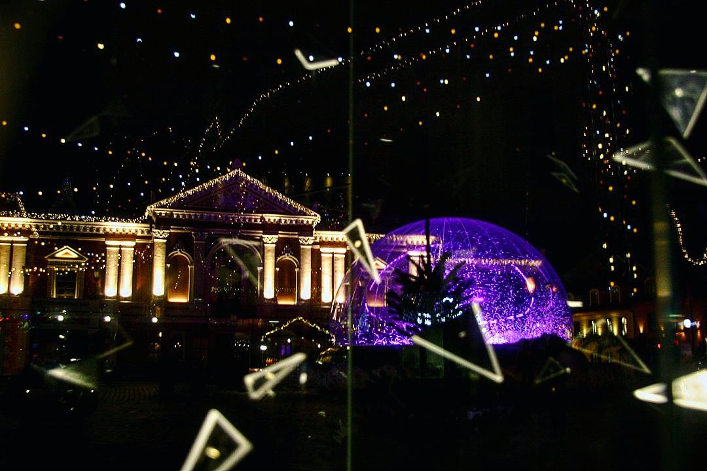

Why I started photography?

About 5 years ago I started seeing everything around me, those details that surround us. Most of them are completely unoticable, but yet so beautiful. So I wanted to capture that beauty and I started taking more and more pictures. I really enjoy finding something that for some people might look ordinary, but can be a true art.

Nature is the most inspiring thing for me.There you can find art in stunning summer sunsets or even the dirty old leaves. Also, recently I have been inspired by Jessica Kobeissi to start shooting more people, because she is a fashion designer and does amazing photo-shoots,which inspires me to do something similar.